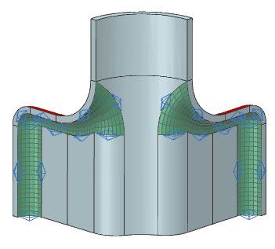

Create a mapped mesh, 2
Continue meshing the inside of the part. The next set of surfaces is the mirror of the last set. The 2D Mapped Mesh dialog box is still open from the previous step.
-

 highlighted faces (4 faces total)
highlighted faces (4 faces total)

-
Apply

Leave the 2D Mapped Mesh dialog box open for the next step.